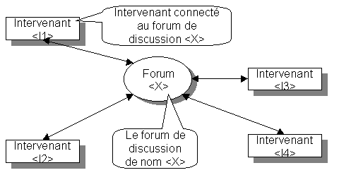
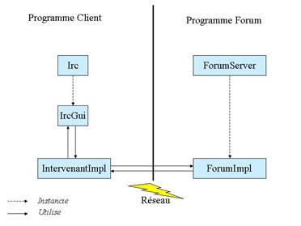

TP CAR
Programmation répartie avec RMI
|
Titre |
Réalisation d'un forum de discussion distribué sur le réseau |
|
Organisation |
Binôme |
|
Outils nécessaires |
JDK 1.4 |
|
Contenu du rendu |
Un rapport explicatif (moins de 3 pages) au format html. |
o Compiler un fichier
javac -classpath ... :$CLASSPATH <X.java
o Exécuter le programme
java -classpath ... :$CLASSPATH X
o Produire la documentation dans le directory Docs
javadoc -d Docs *.java
o Produire le fichier jar
jar cvf X.jar
<files.class
L'objectif de ce TP est l'initiation à la programmation répartie. Il consiste à programmer une application typique comportant de la répartition à l'aide de RMI. Vous devez programmer les parties "client" et "serveur" de cette application à l’aide du langage JAVA et la faire exécuter dans un environnement fait de plusieurs machines virtuelles. Ces machines peuvent être sur une seule machine physique ou dispersées sur plusieurs.
L'objectif est la gestion d'un forum de discussion pouvant faire intervenir un nombre quelconque d'intervenants. Chaque intervenant peut émettre des messages qui sont diffusés à l'ensemble des intervenants. Les messages ne sont pas mémorisés par le forum. Seuls les intervenants présents sur le forum reçoivent les messages émis. Pour émettre, un intervenant doit être connecté au forum. Le protocole d'un forum est très simple et se résume par la spécification des opérations autorisées.
Enter : permet à un intervenant de se connecter au forum.
Leave : permet à un intervenant de se déconnecter d'un forum.
Say : permet à un intervenant d'émettre un message.
Who : permet à un intervenant de connaître l'ensemble des intervenants connectés au forum.
Un intervenant ne peut être connecté qu'à un seul forum simultanément. La description exacte de ces méthodes est donnée dans le fichier Forum.idl. La figure suivante montre le schéma de principe de l’application.

Schéma 1 : Schéma de principe
Structure générale de l’application
L’application est composée des fichiers suivants :
q Forum : Ce fichier contient la description des methodes du forum accessibles à distance.
q Intervenant : Ce fichier contient la description des methodes d’un intervenant accessibles à distance
q Irc.java : Cet objet définit le code d’initialisation du programme client. Il est composé d’une fonction main qui a pour rôle d’instancier l’interface graphique associée au client (IrcGui) ainsi qu’un objet gérant les communications avec le forum (IntervenantImpl).
q IrcGui.java : Cet objet définit l’interface graphique associée au programme client. L’objet IrcGui délègue le traitement des communications à un objet de type IntervenantImpl gérant les communications.
q IntervenantImpl : Cet objet définit le code gérant les échanges avec un forum. L’interface graphique utilise cet objet pour communiquer avec le forum et vis versa.
q ForumImpl : Cet object définit le code d’un forum.
q Forumserver.java : Cet objet définit le code d’initialisation du forum. Il est composé d’une fonction main qui a pour rôle d’instancier un objet ForumImpl qui représente la mise en œuvre effective du forum.

Vous trouverez des informations complémentaires dans la javadoc associée à ces fichiers.
Travail à effectuer
Etape 1
a/ Mise en œuvre élémentaire
La première étape consiste à compléter le code de l’application. Cette mise en œuvre doit impérativement utiliser un serveur de nom pour communiquer les références des divers objets servants. Les forums sont identifiés par des noms bien connus. La panne d’un forum ne doit pas faire planter les clients. Si un forum est en panne, les clients déjà connectés doivent pouvoir continuer à communiquer. Par contre, aucun nouveau client ne pourra se connecter tant que le serveur ne sera pas réparé. Dans cette mise en œuvre, le comportement de l’application est la suivante :
1/ Les clients recherchent un forum particulier dans le service de nom.
2/ Les clients contactent le forum pour s’enregistrer et récupérer les références des clients participant déjà au forum.
3/ Les clients communiquent directement entre eux pour s’envoyer des messages
4/ Les clients contactent le forum pour se déconnecter
b/ Administration
basique des objets forums
La deuxième étape consiste à étendre l’exemple précédent en ajoutant une fabrique d’objets forums et à programmer un objet d’administration permettant à un administrateur d’effectuer des opérations d’administration à distance sur les objets forums via la fabrique. L’objet d’administration est donc un client de la fabrique.
Ces opérations sont les suivantes :
· Create : création d’un nouveau forum.
· Destroy : destruction d’un forum existant.
· List_forum : liste des forums existants.
· List_client : liste les clients connectés à un forum particulier.
· Ban_client : bannit un client d’un forum particulier. Le client ne peux plus se connecter a ce forum.
· Auth_client : autorise un client précédemment banni à se reconnecter à un forum.
· Ping : ping un forum